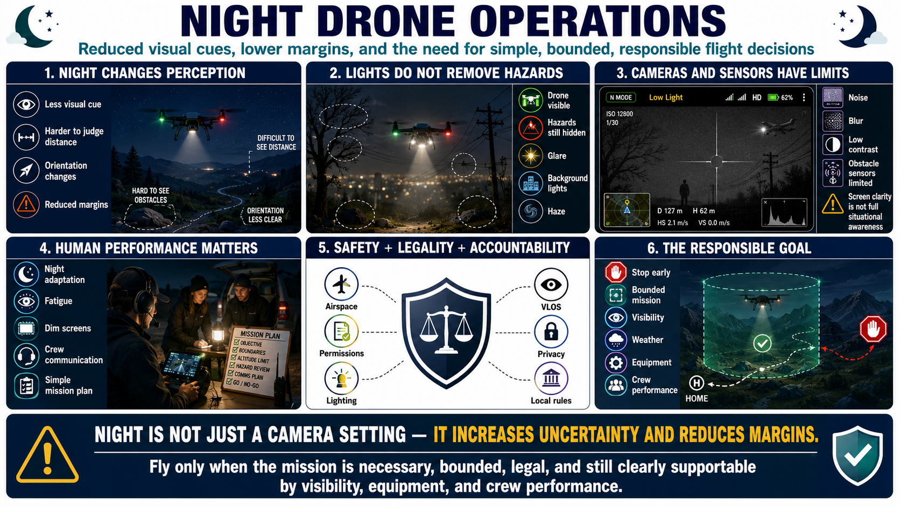

What Are Night Drone Operations?
Connecting to LMS... Progress: in progress

Narration
Night drone operations are flights conducted after dark or under low-light conditions where normal visual cues are reduced. The aircraft may be technically capable of flying, but the operator's ability to judge position, orientation, distance, obstacles, and changing conditions is different from daylight.
Aircraft lights can help identify the drone, yet they do not illuminate every hazard or preserve full depth perception. Background lights, glare, darkness, haze, and uneven terrain can make the aircraft appear closer, farther, higher, or differently oriented than it is.
Camera and navigation sensors also have limits. Low-light video may show noise, blur, or poor contrast. Obstacle sensors may depend on texture or illumination. A clear controller display does not guarantee that wires, branches, people, or aircraft are visible.
Human performance matters. Night adaptation takes time, bright screens can reduce it, and fatigue can slow recognition and decisions. Crew communication and a simple mission plan help compensate for reduced perception.
Safety, legality, privacy, and accountability remain inseparable. Current aviation requirements, airspace, site permissions, aircraft lighting, visual-line-of-sight expectations, and local rules must be checked for the actual mission.
Night is not merely a camera setting. It increases uncertainty and reduces margins. The responsible objective is a bounded, necessary flight that can be stopped early when visibility, orientation, weather, equipment, or crew performance no longer supports safe operation.